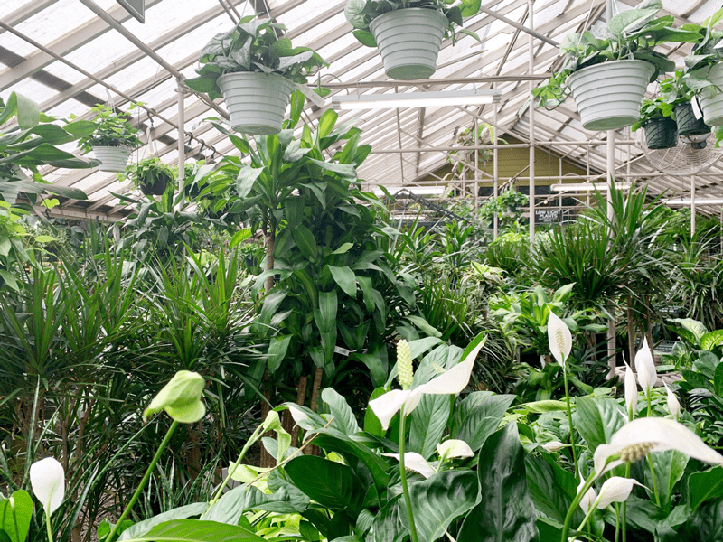

My Routine When Bringing House Plants Home
There are several practices that you can do to reduce or eliminate the potential for pest infestation in the home. They are by no means “no-fail” solutions, as many plant pests can easily go undetected by the eye. I will go more in-depth on specific plant pests and how to eradicate them, but today, let’s chat about some healthy habits a plant lover ought to form.
Arm Yourself with Plant Knowledge
First and foremost, arm yourself with some plant knowledge before you go shopping. I know this isn’t always possible, as spontaneous purchases can get the best of us. But if you can learn what to watch for, identifying bugs/insects and how they negatively affect a plant, you will set yourself up for greater plant success.
If you plan on heading out to purchase a particular plant, check and see if I have a posting on it. I have and will continue to create postings on all the plants I personally grow. I will share what characteristics to watch for if a plant is struggling. Trust me; plants don’t just struggle at home…many times it starts at the store.

Inspect a Plant Before You Buy It
Always, always, give a plant a thorough inspection at the store before bringing it home. We are not just looking for insects, but we are also looking at the overall health of the plant and root system. There have been several occasions where I noticed insects on a plant. If you spot any, be sure to tell the plant shop owner or greenhouse owner so that they can quarantine the plant and ensure it doesn’t spread to fellow plants.
- Check the leaves–look for yellowing leaves, brown leaves, spots, holes (is something eating the leaves?). I brought a plant home from a nursery only to a find a huge caterpillar eating its way through the leaves.
- Check the roots–there should never be an issue in looking at the root system. If you don’t feel comfortable removing a plant from the pot, ask an associate to do it for you. You are looking for healthy roots; they are usually white(ish) in color and firm. If they are soft and brown, pass on the plant, as it is facing possible root rot.
- Leaf dwellers that attack plants include aphids, spider mites, scales, mealybugs, spiders, gnats, or lacewings.
- Insects can also set up shop in the soil of plants set outside for the summer or in some plant nurseries. These pests include slugs, sowbugs, earwigs, fungus gnats, and ants.
- If you are a plant geek (like me), take a pair of magnifiers with you. That may seem downright silly, but think about it…you are bringing this living plant into your home. If it’s infested with some insect, you can almost guarantee that it will spread to your other plants.
Clean and Treat the Plant Once Home
Let me share with you my regimen when I bring a plant home.
- First off, it gets a good cleaning. During the summer, I do this outdoors. In the winter, I do this in the tub or shower. Not all plants can handle such a cleaning, such as an African Violet, but most can take it. Spraying the leaves with water can help knock off any bugs that are hanging out.
- I then spray the plant with a neem oil solution. I dose the leaves (be sure to get underneath), the pot itself, and the top of the soil. The ingredients I use in the solution suffocate the insects, killing them off.
- Allow the plant to sit for at least 30 minutes, then wipe the leaves dry. Cleaning the leaves will also remove insects.
- Isolate the plant for at least two weeks. Keep an eye on the plant to see if any insects pop up; treat as needed.
Use Clean Pots and Potting Soil
- Pots: If you’re bringing home a new plant and are putting it in a new pot (or even repotting a plant that you already have), make sure that pot is thoroughly cleaned with a diluted soap or bleach solution to ensure there are no disease-carrying agents.
- Soil: The same goes for soil. I always provide new soil for my plants, because there is no telling if there are any leftover eggs overwintering in the soil from previous pests.
Remove Any Potential Pests from the Soil
Sometimes the plant you bought will have insects within the soil. A while back, I purchased a dracaena plant from Home Depot, and it was infested with millipedes. Of course, I didn’t know this upon my purchase. Over a short time, the plant started dropping yellow leaves. It was alarming, so I put on my detective hat to see just what the heck was happening.
That’s when I found millipedes in the bottom of the pot. A natural way to reduce the millipede population is to spread diatomaceous earth on the soil. At the time, I didn’t have any, so I did a hydrogen peroxide treatment. Before I did anything, I repotted the plant in fresh soil. I made sure to remove as much of the old soil as I could. I then made up the peroxide solution (read about it here) and poured it through the soil. Within a week, the life of the plant turned around, and it’s doing great today!
Isolate Your New Plant
As I mentioned above, isolate your plant from other plants for a few days to a couple of weeks. Inspect the leaves and stems every day. If you think everything checks out, then move it into your intended space. Some pests spread when they have a “bridge” to get across to the next plant, so do your best in introducing a healthy plant to your home.
From there, it’s all about loving your plant, which entails adequate watering, the appropriate amount of light, plant food, regular cleaning, and most of all…touch and speak words of love to your plants. Call me silly, but if you don’t do it, don’t call me when they aren’t thriving. :) Blessings, amie sue
© AmieSue.com